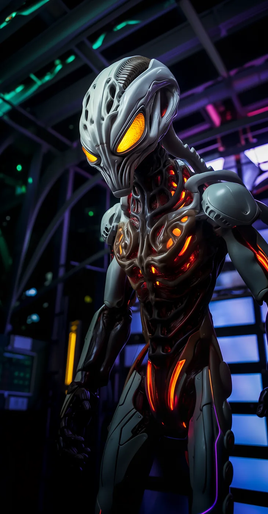

©
©
GENEZYS ARCHIVE · Earth 2 · Synthbot
Nexo
Plank Vaulter

Archive record
Nexo is the heart of the Astral Nexus, and the one willing to stop beating. The Wild Helix sacrifices Nexo instantly and condemns the target to follow. Nexo's pilot knows exactly what that costs on Earth 2, and chooses it anyway.
Combat signature
Wild Helix
110 Cosmara
390 Animus
320 Vitalis
Spins chaotic spiral attack: Commits self-sacrifice (dies immediately). Sets the target's CD to 0 and marks them to die after their turn.
Genezys 08:09 ™&©2026LEGIONS
Return to LEGIONS